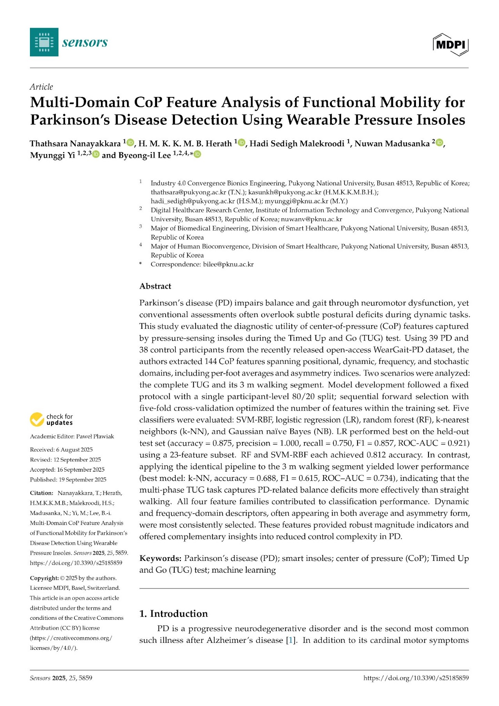

Click to Inspect First Page
EDITOR'S CHOICE
Open Access
Multi-Domain CoP Feature Analysis of Functional Mobility for Parkinson's Disease Detection Using Wearable Pressure Insoles
Published in Sensors, Volume 25, Issue 18, Article 5859 (September 2025)
Center of Pressure (CoP) Feature Extraction: Extracted 144 CoP features across positional, dynamic, frequency, and stochastic domains including per-foot averages and asymmetry indices.
Timed Up and Go (TUG) Protocol: Evaluated diagnostic utility across 39 Parkinson's disease and 38 control participants during dynamic balance and turn tasks.
Machine Learning Diagnostic Performance: High diagnostic classification accuracy (ROC-AUC = 0.921) achieved using a 23-feature WearGait-PD subset.
View Publication on MDPI ↗
DOI: 10.3390/s25185859